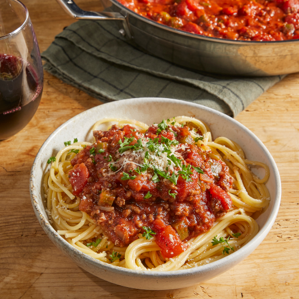

Spaghetti Recipe

Desciption:
There's nothing like classic spaghetti and meat sauce to bring people together around the dinner table. This homemade spaghetti sauce with ground beef recipe will satisfy all your comfort food cravings.
Ingredients:
- 1/4 pount ground beef
- 1/4 medium onion
- 1 clove of garlic
- 1/4 small green bell pepper
- 4 ounces of tomato sauce
- 1.5 ounces of tomato paste
- half a teaspoon dried oregaon
- half a teaspoon dried basil
- salt and pepper to taste
Directions:
- Combine ground beef, onion, garlic, and green pepper in a large saucepan over medium-high heat. Cook and stir until meat is browned and crumbly and vegetables are tender, 5 to 7 minutes. Drain grease.
- Stir diced tomatoes, tomato sauce, and tomato paste into the pan. Season with oregano, basil, salt, and pepper. Simmer spaghetti sauce for 1 hour, stirring occasionally.